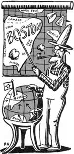

Well sir, the Traveling Humor Hunters of Plumtree Crossing figured that two issues (Nos. 104 and 105) was almost enough time to freeload off Ott Bartlett's cousin Hiram. So they told Hiram they figured it was time to get back to their railroad explorations.
"Gorry," Hiram chipped in, "I've got a mind to go a ways with ye. Why don't we all ride on down to Boston and visit my relation, Lewis Stilwett."
"Now," Ott said, "we wouldn't want to impose."
"I would," replied Hiram. "He's the starched shirt kind. Claims that although his family didn't come over on the Mayflower, some ancestor tried to hop on the ship and missed." Hiram's eyes twinkled. "Might be kind of fun to drop in on the old boy."
So Hiram turned the farm over to the hired man, and the whole mess of’ em climbed on the next train headed to "the hub of the universe." On the way, Hiram talked about what to expect. "Every person Lewis knows is either a Boston Brahmin or a Hopi."
"A Hopi Indian?" Purvis Jacobs asked.
"No, a fella who hopes he can become a Brahmin. Heck, one of his neighbors once tried to get a job at a Chicago bank, so he asked a family acquaintance at the Old Colony Trust Fund to write him a reference letter. 'I can recommend him to you whole-heartedly,' the friend wrote. 'His mother was a Cabot, his father was a Lowell and his ancestors were all Applebys, Forbeses and Peabodys.'
"The Chicago people wrote right back, 'Sorry, but we are not contemplating using the young man for breeding purposes.' "
Hiram continued, "Heck, one time I visited Cousin Stilwett in December and he took me to the city's planetarium. Said they were showing the night skies as they looked on Christmas Eve 2,000 years ago.
'Over Bethlehem?' I asked.
'No, no,' he said. 'Over Boston.' "
Four hours later, our motley heroes were at 10½ Beacon Street, on the fifth floor of the Athenaeum Library. There, in a giant chandeliered reading room, filled with ancient busts and musty oils, Lewis Stilwett, Hiram Bartlett and Plumtree Crossing's Diplomatic Corps were attending an afternoon tea in honor of the Society of Descendants of the Illegitimate Sons and Daughters of the Colonial Governors.
Most of the fellas wandered shyly around the reading room, nibbling bravely on tiny crustless sandwiches ("too small to pink a piglet," Clarence Smithers complained) and listening to casual conversations:
"I just got back from New York. I went down for an intellectual rest."
"Really? I don't believe in traveling. I'm already here."
"I know just what you mean. My sister and I went to San Francisco last summer. When she complained about how hot it was, I told her, 'My dear, you must remember. We're 3,000 miles from the ocean.' "
"I attended the theatre the other night. Saw Shakespeare's Hamlet."
"Did you enjoy it?"
"Quite remarkable. There aren't a dozen men in Boston who could have written that play."
"I hear that young upstart Brand Collins is gaining quite a reputation."
"Only nationally."
"Did you hear the Herald may fold?"
"No! What will the country do for a newspaper?"
Ott Bartlett and Mr. Stilwett were having their own active interchange. Ott had been carrying on about the glories of Plumtree Crossing awhile when Lewis interrupted, "Yes, people from out your way can be brag garts, but they can never be snobs."
"Why, all the Bostonians I've met have been real warm and friendly," Ott said sarcastically.
"You just haven't met the right people," Lewis replied.
"Watch out, you perpendicular coffin," Ott snapped. "I can be ornerier than you and all your tea-party pals."
"My boy, true disagreeableness is inherited. Still, perhaps if I gave you lessons-"
"That does it, I'm gonna skin you and your genealogy!" Ott shouted so loudly even Hiram got concerned. "Ott, you better hold it down."
"Heck, I'll cuss him loud enough to chase his grandmother off the John!" Ott opened up both barrels. "Stillborn, I'm gonna teach you petrified pilgrims a thing or two! I'll bust your family tree into toothpicks! I'll chop your stiff neck and that mildewed smirk-"
Just then, a grande old Boston dame, jewelry jangling, came right between the dueling duo. "Oh, Lewis," she broke in, "you simply must introduce me to your friend." She then quickly shook Ott's hand and said with a cheerful smile, "You make this Plum Tea Croissant home of yours sound ever so pleasant."
Ott bowed graciously to this obviously sound-minded woman and said, "Ma'am, Plumtree Crossing's so nice that heavenly angels have tried to get weekend passes to come and visit."
"Oh, that's wonderful," the lady replied. "You know, I had a dear friend who went to heaven." Ott smiled sympathetically. "Her husband was so upset over losing her. He just had to talk to her one more time. After a bit of effort he finally got a phone call through to heaven. 'Hello, Abigail?' he called out.
'Henry, dear, is that you?'
'Yes, my love. How do you like it up there?'
'Oh, it's very nice,' she replied, 'but of course, it isn't Boston.' "
Editor's Note: Do you have a distinctive bit of regional American humor you think the Plumtree boys should hear on their travels? If so, send it to Last Laugh, Mother Earth News, P.O. Box 70, Hendersonville, NC 28793. We'll pay $10 for any joke we publish (that the fellas didn't know already!).
|
 ILLUSTRATIONS BY PETER KUPER |
|
|